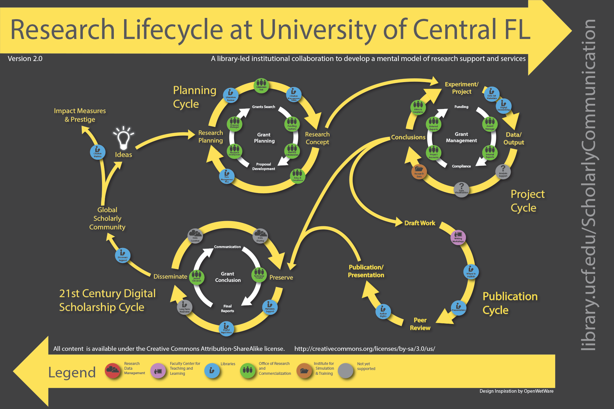

1.4 Research Lifecycle - Lifecycle and Data Management
Description
The first module of the training is an introduction of the Open Science environment to SSH researchers. This module has four learning outcomes.
- Describe the current policy landscape that shapes knowledge production and the way it affects the SSH Research Framework
- Identify SSH practices in Open Science
- Recognise SSH specificities within the research workflow during knowledge production from an ethical, legal and methodological perspective.
- Describe what the research data management requirements and standards are
In this learning unit we will discuss SSH in the research life cycle and we are going to look at:
- Research life cycle as a concept
- Data life cycle
- ELSI
Learning resources
Research Lifecycle Frameworks
There are numerous frameworks of research lifecycles with similar key stages like planning, project execution, and dissemination of results, tailored by different institutions in accordance with their operations.
 Image from: https://library.ucf.edu/about/departments/scholarly-communication/overview-research-lifecycle/ - CC BY-SA 3.0
Research Data Management Lifecycle
Research data garners a lot of attention as it is one of the most crucial components of the research puzzle. Of course analysis and reports, and outcomes are the fundamental to why we do research, but the essence, and the further understanding of how we reach a conclusion or an outcome, should be based on the accumulation of data and research materials during the analysis process.
 Image fromCioffi, M., Goldman, J., & Marchese, S. (2023). Harvard Biomedical Research Data Lifecycle (Version 5). Zenodo. https://doi.org/10.5281/zenodo.8076168
Image fromCioffi, M., Goldman, J., & Marchese, S. (2023). Harvard Biomedical Research Data Lifecycle (Version 5). Zenodo. https://doi.org/10.5281/zenodo.8076168
Open Science - Specificities of SSH
In the realm of Social Sciences and Humanities (SSH), there is a significant diversity in what we perceive as data. This diversity extends to multilingualism, acknowledging the necessity to manage and interpret data in multiple languages. Bibliodiversity is also crucial, reflecting the importance of varied scholarly publications beyond traditional journal articles, such as monographs and edited collections. Additionally, non-traditional research outputs play a vital role in SSH. Dissemination of results and scholarly communication in SSH extends beyond academic circles, placing a strong emphasis on giving back to society. This involves engaging with a broader community and policymakers to ensure the societal impact and relevance of the research conducted within SSH.
Managing Research Lifecycle in SSH
Open Access Books
The lifecycle paradigm can be adapted to specific activities of the research lifecycle to help visualise the steps of the process on how to best manage and produce outputs. One of the outputs that are very important to SSH researchers are monographs. OAPEN has produced guidance on how to fully prepare, produce and share a book from writing the manuscript to making it reusable.
FAIR data in the Humanities
Lifecycle frameworks could be applied not only for a type of research output, but also in different domains. This example covers a FAIR data management lifecycle in the Humanities, pointing out the various necessities to considers depending on the stage of the lifecycle.
 Image from: https://allea.org/portfolio-item/sustainable-and-fair-data-sharing-in-the-humanities/ - CC BY-NC 4.0
Image from: https://allea.org/portfolio-item/sustainable-and-fair-data-sharing-in-the-humanities/ - CC BY-NC 4.0
ELSI
Written by Luca Schirru (KUL), Sabrina Brizioli (CNR) and Valentina Colcelli (CNR), this section on Social Sciences and Humanities (SSH) and the Ethical, Legal and Social Implications of Data (ELSI) will guide you through the main considerations and frameworks that govern the use of data to ensure that it is in line with ethical standards and legal requirements.
Understanding the nature and source of data is critical. Data can be categorised as personal or non-personal and can be generated by humans or machines. Whether data is personally identifiable or not, and whether significant investment has been made in its collection and verification, influences the applicable legal frameworks, such as the sui generis database right.
The EU's legal framework for data is complex, encompassing multiple directives, regulations and proposals. Key regulations include the GDPR for personal data, the Data Act for IoT data, and the AI Act for high-risk AI systems. Intellectual property rights (IPRs) are also critical, particularly for databases that involve significant investment in their creation or design.
EU legal framework for data
The legal framework for data is complex and multi-layered. Member States are also parties to international intellectual property treaties. At the EU level, data is governed by several pieces of legislation:
- Personal Data: Regulated by the GDPR, which ensures the protection and privacy of individuals' data within the EU.
- IoT Data: Covered by the Data Act, which includes both personal and non-personal data.
- AI Data: Covered by the AI Act, which sets out data governance frameworks for high-risk AI and ensures access to high-quality datasets for researchers.
Intellectual property rights (IPRs) require special attention, particularly in relation to databases. Databases can be protected under IPRs in two main ways:
a) If they are the author's own intellectual creation by reason of the selection or arrangement of their contents. b) if there has been a substantial investment in obtaining, verifying or presenting the contents, thereby preventing extraction and/or re-utilisation of the whole or substantial parts of the database.
Understanding these rules and their implications is critical to compliant and ethical data management in the EU.
Intellectual Property (IP) Categories
Intellectual Property Rights cover various aspects, from trade secrets to copyrights. Databases, for instance, may receive protection if they involve significant investment or creative arrangement. Understanding these rights and their international treaties, like the Berne Convention and TRIPs, is essential for managing data.
According to the World Intellectual Property Organisation (WIPO, 2020), IP is often divided into two main categories:
- Industrial Property: This includes patents for inventions, industrial designs, trademarks and geographical indications.
- **Copyright and related rights: These cover literary, artistic and scientific works, including performances and broadcasts.
Authorised uses of copyrighted works
In addition to the uses permitted under a licence, it is also possible to use copyrighted works that fall into the following categories: 1. Public Domain: Works that are no longer protected by copyright. 2. Limitations and Exceptions (L&Es): Specific uses that are allowed under copyright law without the need for permission.
Considerations for copyrighted material
When using material, it is important to consider the following: - The material may not be protected by copyright. - It may be covered by other exclusive rights, such as the sui generis database right (SGDR), which may require additional and different permissions.
Copyright protection for databases
Copyright protection is conferred on databases when, by reason of the selection or arrangement of their contents, they constitute the author's own intellectual creation. This is stated in Article 3 (1) of the Database Directive.
Copyright & Licencing
Copyright of course is directly linked with licencing. Creative Commons (CC) licences provide a standardised way to grant the public permission to use creative works. Unlike the standard "All Rights Reserved" in copyright law, CC licences allow for "Some Rights Reserved", allowing for wider distribution and transformative use while retaining certain exclusive rights.
When using Creative Commons licenses, it's important to consider the types of data and the compatibility of different licenses. National laws and the specific limitations and exceptions they may foresee must also be factored in to ensure compliance.
This topic will be covered in 2.5 Licencing with supporting material from FAIR-by-design Train of Trainers.
Scope of the GDPR (material and territorial scope)
The General Data Protection Regulation (GDPR) applies to personal data within a specific scope, ensuring robust protection and privacy for individuals. Here are the main aspects of its applicability:
-
Processed by a controller or processor in the EU: The GDPR applies to the processing of personal data by entities established in the EU, regardless of where the actual processing takes place.
-
Of data subjects in the EU for specified activities and the controller and processor are not established in the EU: The Regulation applies to data subjects in the EU, even if the controllers or processors are established outside the EU, provided that the processing activities relate to offering goods or services to, or monitoring the behaviour of, EU residents.
-
In the context of the activities of an establishment of a controller or processor in the EU, even if the processing is not carried out in the EU: If a controller or processor has an establishment in the EU, the GDPR applies to its data processing activities, regardless of whether the processing itself takes place inside or outside the EU.
-
which form part of or are intended to form part of a filing system: The regulation applies to personal data that form part of, or are intended to form part of, a structured set of data that is accessible according to certain criteria.
-
Wholly or partly processed by automated means: The GDPR applies to data processing activities carried out wholly or partly by automated means, ensuring that even automated data processing meets its strict requirements.
These scopes ensure comprehensive coverage of personal data processing activities, in line with the principles of lawfulness, fairness and transparency, and safeguarding individuals' data rights in different contexts and jurisdictions.
Under the GDPR, personal data must be processed lawfully, fairly, and transparently. It should be collected for specific, explicit, and legitimate purposes, be accurate and kept up to date, and be processed securely. These principles ensure that data subjects' rights are protected.
Main principles of processing of personal data
Principles
- Lawfulness, fairness and transparency.
-
Personal data must be "processed lawfully, fairly and transparently in relation to the data subject".
-
**Purpose limitation
-
Personal data must be 'collected for specified, explicit and legitimate purposes and not further processed in a manner incompatible with those purposes'.
-
**Data minimisation
-
Personal data must be 'adequate, relevant and limited to what is necessary in relation to the purposes for which they are processed'.
-
**Accuracy
-
Personal data must be 'accurate and, where necessary, kept up to date'.
-
**Limitation of storage
-
Personal data must be "kept in a form which permits identification of data subjects for no longer than is necessary for the purposes for which the personal data are processed".
-
**Integrity and confidentiality
-
Personal data must be "processed in a manner that ensures appropriate security of personal data, including protection against unauthorised or unlawful processing and against accidental loss, destruction or damage, using appropriate technical or organisational measures".
-
**Accountability
- The controller must be responsible for and able to demonstrate compliance with the previous points.
Legal bases
Finally, there is a closed list of legal bases for processing personal data under the GDPR. The bases are the various legal grounds on which the processing of personal data is considered lawful.
- Consent.
-
The data subject has given his or her consent to the processing of his or her personal data for one or more specific purposes.
-
Performance of a contract
-
The processing is necessary for the performance of a contract to which the data subject is party or in order to take steps at the request of the data subject prior to entering into a contract.
-
Compliance with a legal obligation**.
-
Processing is necessary for compliance with a legal obligation to which the controller is subject.
-
Protection of vital interests
-
Processing is necessary to protect the vital interests of the data subject or of another natural person.
-
Public interest
-
Processing is necessary for the performance of a task carried out in the public interest or in the exercise of official authority vested in the controller.
-
Legitimate interest
- Processing is necessary for the purposes of the legitimate interests pursued by the controller or by a third party, except where such interests are overridden by the interests or fundamental rights and freedoms of the data subject which require the protection of personal data, in particular where the data subject is a child".
Under the GDPR, consent must be free, specific, informed and unambiguous, and therefore cannot be assumed.
References
Further reading
GDPR - get links
Art. 3 (1): This Regulation applies to the processing of personal data in the context of the activities of an establishment of a controller or a processor in the Union, regardless of whether the processing takes place in the Union or not.
Art. 3 (2): It also applies to the processing of personal data of data subjects who are in the Union by a controller or processor NOT established in the Union, -
- where the processing activities are related to: (a) the offering of goods or services to data subjects in the Union; or (b) the monitoring of their behaviour which takes place within the Union.
Art. 2 (1): The GDPR applies to the processing of:
( i ) personal data wholly or partly by automated means AND
( ii ) to the processing other than by automated means of personal data which form part of a filing system (or are intended to).